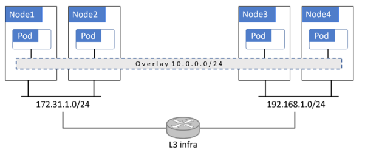
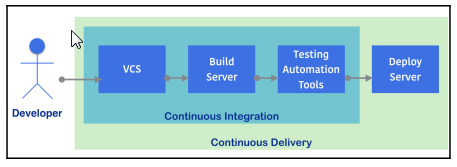

Introduction Kubernetes¶
face shopping_cart
traduction¶
- fully-fledged : à part entière
- meshes : mailles
- discrepancy: contradiction
- ingress : entrée
- claim : demande, revendication ( PVC : Persistant Volume Claims, demande de volume persistant)
- worth it: ça vaut le coup
- sprawl : étalement
Glossaire¶
- cluster : ensemble de machines (VM, physique,) , formant un ou plusieurs masters et une collection de nodes
- masters ou control plane : forment les éléments de pilotage du cluster k8s
- nodes ou data plane : forment l'ensemble des machines sur lesquelles vont s'éxécuter les déploiements.
- controleurs : le déploiement des pods via des controleurs : Deployments, DaemonSets, StatefulSets, CronJobs,etc.
- CronJobs : comme son nom l'indique
- DeamonSets : sera lancé sur tous les noeuds
- StatefulSets : pour les besoins de persistance
- Deployments : le truc classique permettant de beneficier de la scalabilité et des rolling update
- pod : unité atomique de déploiement, peut contenir plusieurs containers
- service : fait le lien entre plusieurs pod pour leur donner un point d'attache vis à vis de l'exterieur.
Présentation générale¶
les configurations les plus simples peuvent exécuter tous les services principaux formant le master sur un seul hôte. C'est bien pour une configuration de aboratoire ou d'environnement de test, mais pour les environnements de production, la haute disponibilité multi-master est un élément indispensable. C’est pourquoi les principaux fournisseurs de cloud mettent en œuvre des masters HA (High Availability) dans le cadre de leurs solutions. Entre 3 et 5 masters répliqués sont un bon début pour la production.
Des offres de providers KaaS (Kubernetes-as-a-Service) :
- Azure Kubernetes Service (AKS),
- AWS Elastic Kubernetes Service (EKS),
- Google Kubernetes Engine (GKE).
kubernetes DNS : une adresse IP statique hard codéee dans tous les pods !!! basé sur CoreDNS
Pour le master :
- api-server
- Cluster Store -> etcd
- bCloud Controller manager
- scheduler
- Controller Manager
Sur un node :
- kubelet
- cri-containerd
- kube-proxy
Les pods : vient de l'expression groupe de baleines, le symbole de docker est une baleine : cqfd. la plupart du temps un pod contient un seul container, mais il y a des cas (avancée) où il faut plusieurs containers dans un pod, c'est le cas pour:
- service meshes (service de maillage de micro-services)
- serveur web, avec des systèmes de mise à jour
- ...
les containers dans un pod se partagent tout: ipc, mémoire, stockage, même adresse IP si 2 containers dans un pod ont besoin de discuter, ils passent par locahost et des numéros de ports.
l'unité de croissance n'est pas le container, mais le pod. Le déploiement d'un pod est une opération atomique : Un pod est soit déployé, soit ne l'est pas, mais jamais partiellement. L’ensemble du pod démarre et est mis en service ou ne l'est pas. Un seul pod ne peut être planifié que sur un seul nœud. Tous les conteneurs d'un même pod s'exécutent sur le même node.
Quand un pod meurt, il n'est pas réanimé, c'est un nouveau pod qui est démarré avec toutes les conséquences : nouvelle adresse IP, nouvel ID, etc...
Les pods ne sont pas déployés directement, mais passent par un Deployments, DaemonSets, StatefulSets, CronJobs
Pour la gestion dynamiques des IPs, on passe par la définition d'un service, qui fera le lien en les différentes instances d'un pod et le monde externe.
services¶
Permet de fédérer un ensemble de pods, par un nom, une adresse IP, un numéro de port, un nom dns. Un service est un objet de k8s à part entière.
Un service n'opère qu'au niveau IP (TCP ou UDP) et n'a pas d'intelligence applicative. Le lien entre les pods et un service est fait au travers d'étiquettes (label)
StatefulSets¶
Comme son nom l'indique permet d'avoir des pods gérent des états.
A la différence de Deployments les informations associés au pod sont permanentes : adresse IP, noms predictibles, gestion de l'ordre de lancement.
Les PODs d'un StatefulSet ne sont pas interchangeable à la différence de ceux d'un Deployments.
Lorsqu'un pod géré par un StatefulSet échoue,
il est remplacé par un autre pod portant le même nom, le même identifiant et la même adresse IP.
Les pods StatefulSets sont tous les services qui conservent un état. Ceux-ci peuvent inclure:
- Pods nécessitant un accès à des volumes nommés spécifiques
- Pods nécessitant une identité réseau persistante
- Les pods qui doivent être mis en ligne dans un ordre particulier.
Autoscaling¶
Certains fonctionnatilités sont encore en alpha ou beta. Plutôt que de faire le scaling à la main, il est possible de l'automatiser.
- Horizontal Pod Autoscaler (HPA) : Augmente ou diminue automatiquement le nombre de pods en fonction de règles données.
- Cluster Autoscaler (CA) : Augmente ou diminue automatiquement le nombre de nodes en fonction de règles données. CE point nécessite un intégration avec la couche infrastructure sous-jacente.
- Vertical Pod Autoscaler (VPA) : Encore en alpha, pour la croissance verticale d'un pod (typiquement le nombre de CPUs).
Sécurité dans k8s¶
le modèle STRIDE:
- Spoofing
- Tampering
- Repudiation
- Information disclosure
- Denial of service
- Elevation of privilege
Protecting the Cluster Store against DoS Attacks La configuration d'un Cluster k8s est stockée dans etcd, il est donc primordial que celui-ci soit disponible et sécurisé.
Il est donc important de suivre les recommendations suivantes:
- Configurer un cluster etcd en avec trois ou cinq noeud.
- Configurer la supervision et les alarmes (monitoring and alerting) pour les requétes à l'etcd.
- Isoler l'etcd au niveau réseau pour que seuls les membres du control plane puissent interagir avec lui.
l'etcd est le point d'engorgement le plus fréquent sur des grandes configurations kubernetes.
Kubernetes ne supportent pas les clusters multi-tenant. La frontière de la sécurité au niveau du cluster kubernetes est le cluster lui-même
Le seul moyen de garantir l'isolation en terme de charge entre différents workload est de les faire exécuter sur des clusters différents. Il existe un Multitenancy Working Group qui travaille sur le sujet de manière active et qui peut laisser espérer que cela change, mais pour le moment:
- Isoler la production du non-production dans des clusters différents
- Isoler différents clients dans des clusters différents
- Isoler les fonctions business et les projets sensibles dans des clusters séparés.
micro VM : renforcer l'isolation¶
Pour renforcer l'isolation des containers , 2 projets : gVisor et Kata Containers voir l'article LeMagIT. Ces 2 projets créent des 'micros VM'. Kata se base sur des extensions Intel (ça marche sur AMD ?), gVisor de google est plus un container bac à sable avec uniquement un sous-noyau qui ne comprend pas tous les appels systèmes Unix.
Kubernetes et réseau d'Overlay¶

En règle générale, les réseaux overlays encapsulent des paquets pour la transmission sur des tunnels VXLAN. Dans ce modèle, le réseau en overlays est un réseau virtuel de couche 2 fonctionnant au-dessus d'une infrastructure de couche 3 existante. Le trafic est encapsulé afin de pouvoir circuler entre les pods situés sur des nœuds différents. Cela simplifie la mise en œuvre, mais l’encapsulation pose des problèmes pour certains pare-feu.
CI/CD Pour les nuls¶
